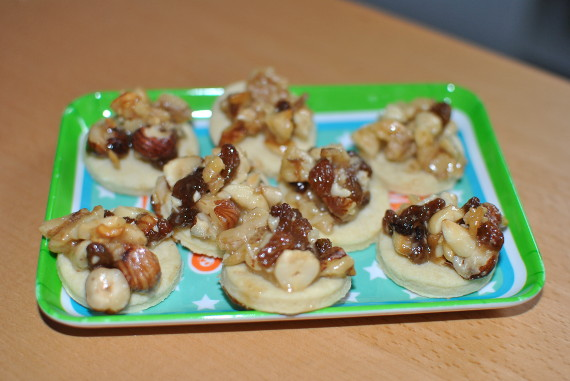

Studenten-Florentiner

- Zubereitung: ca. 60 Minuten
- Backen: ca. 15 Minuten
- Für ca. 40 Stück
Zutaten
Für den Teig
- 220 g Mehl
- 1 gestr. TL Backpulver
- 1 Päckchen Vanillezucker
- 3 EL Milch
- 100 g Butter
Für den Belag
- 40 g Butter
- 80 g Zucker
- 1/2 Päckchen Vanillezucker
- 1 1/2 EL Honig
- 4 EL Sahne
- 300 g Nüsse, gemischt (Studentenfutter)
Zubereitung
- Aus den Zutaten einen geschmeidigen Knetteig zubereiten, eventuell nochmal kaltstellen. Dünn ausrollen und runde Plätzchen mit einem Durchmesser von ca. 4 bis 5 cm ausstechen. Die Plätzchen auf ein Backblech mit Backpapier legen. Den Ofen
auf 175° Celsius vorheizen. Die Plätzchen ca. 7 Min. hellgelb vorbacken und auf dem Blech liegen lassen.
- Während des Vorbackens die Karamellmasse zubereiten. Butter, Zucker, Vanillezucker und Honig in einer Pfanne bei großer Hitze hellbraun karamellisieren, mit einem Kochlöffel oft umrühren. Vom Herd nehmen, 3 EL Sahne einrühren bis der Zucker
gelöst ist, dann das Studentenfutter zufügen. Zurück aufs Feuer und das Studentenfutter untermischen, bis alles erhitzt und mit dem flüssigen Karamell überzogen ist.
-
Die Nussmasse mit zwei Teelöffeln auf die Plätzchen verteilen, wenn sie zu zäh wird, wieder aufwärmen. Die belegten Plätzchen erneut ca. 7 Min. bei 175° Celsius backen. Nach dem vollständigen Abkühlen in einer dicht schließenden Dose aufbewahren.
Quelle : http://www.chefkoch.de/rezepte/159491069756721/Studenten-Florentiner.html